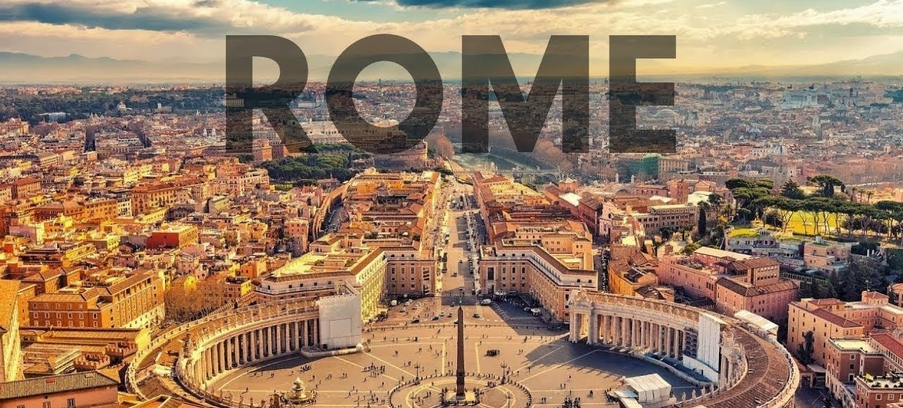
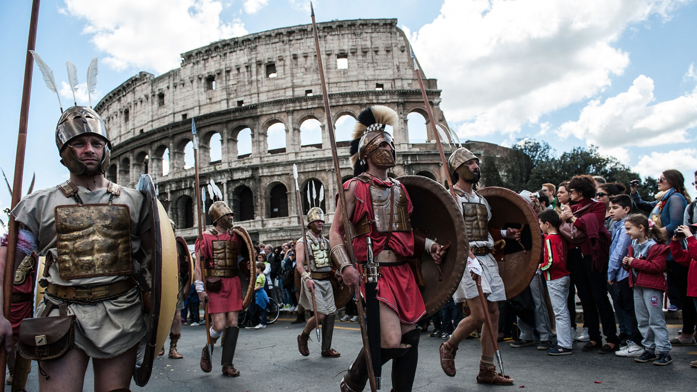
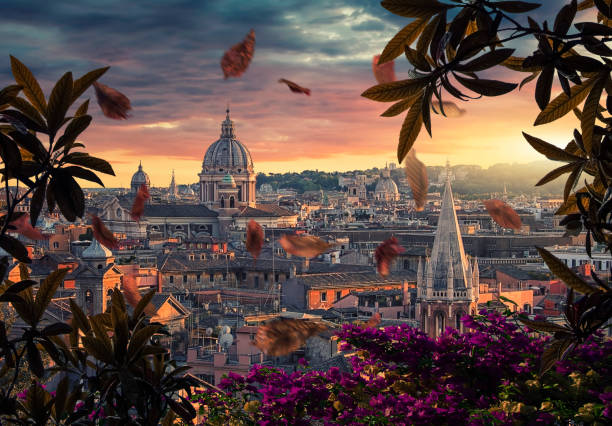
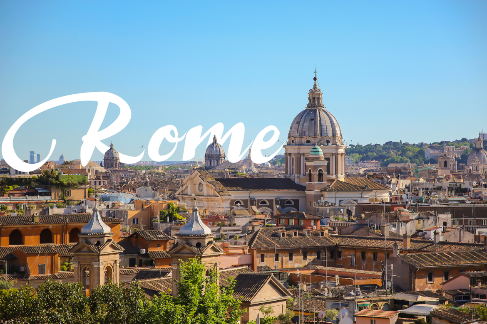
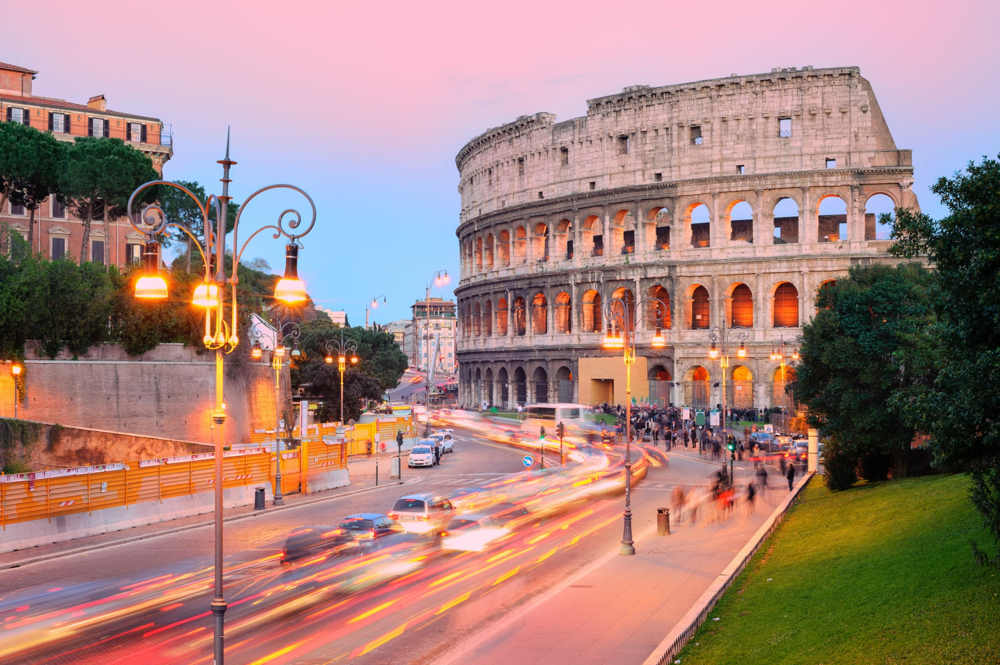

Roma este un important centru turistic. Printre monumentele cele mai faimoase
se numără Colosseumul și Columna lui Traian. O enclavă a Romei este și statul Vatican, un teritoriu
suveran al Sfântului Scaun situat într-un cartier roman. Este cel mai mic stat din lume, și capitala
singurei religii care are reprezentanță în Națiunile Unite (ca un stat observator non-membru). Centrul
istoric al orașului este dominat de tradiționalele „șapte coline ale Romei”:
colinele Capitoliu, Palatin, Viminal, Quirinal, Esquilin, Celian și Aventin. Tibrul curge spre sud
prin Roma, centrul fiind situat acolo unde Insula Tibrului facilita trecerea.


Roma a fost un centru mondial al Renașterii, al doilea doar în urma Florenței, și a fost profund
influențată de această mișcare. Cele mai impresionante capodopere ale arhitecturii renascentiste în Roma
sunt Piazza del Campidoglio de Michelangelo, împreună cu Palazzo Senatorio, sediul guvernului local.
În această perioadă, marile familii aristocratice ale Romei obișnuiau să construiască locuințe opulente
precum Palazzo del Quirinale (acum sediul președintelui republicii), Palazzo Venezia, Palazzo Farnese,
Palazzo Barberini, Palazzo Chigi (acum sediul primului ministru), Palazzo Spada,
Palazzo della Cancelleria, și Villa Farnesina..

Unul dintre simbolurile Romei este Colosseumul, cel mai mare amfiteatru
construit vreodată în Imperiul Roman. A avut inițial o capacitate de 60.000 de spectatori, după care
a fost extins. Colosseumul a fost folosit pentru lupte între gladiatori. Lista monumentelor foarte
importante ale Romei antice include Forumul Roman, Domus Aurea, Panteonul, Columna lui Traian, Piața
lui Traian, zonele catacombelor, Circus Maximus, Băile lui Caracalla, Castelul Sant'Angelo, Mausoleul
lui Augustus, Ara Pacis, Arcul lui Constantin, Piramida lui Cestius și Bocca della Verità.



